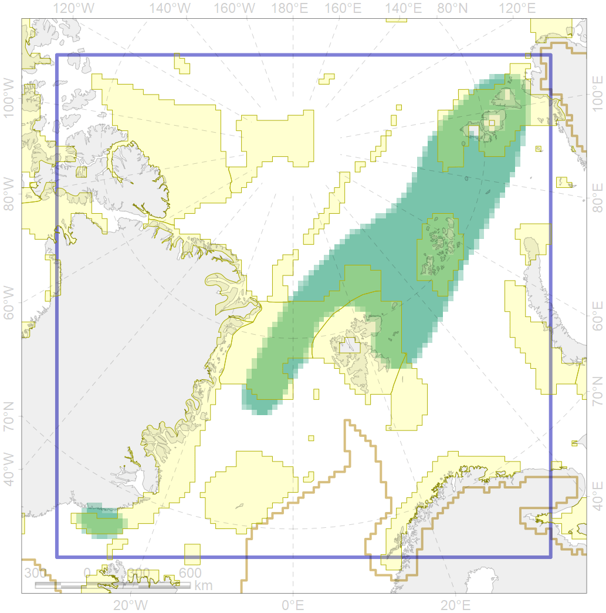
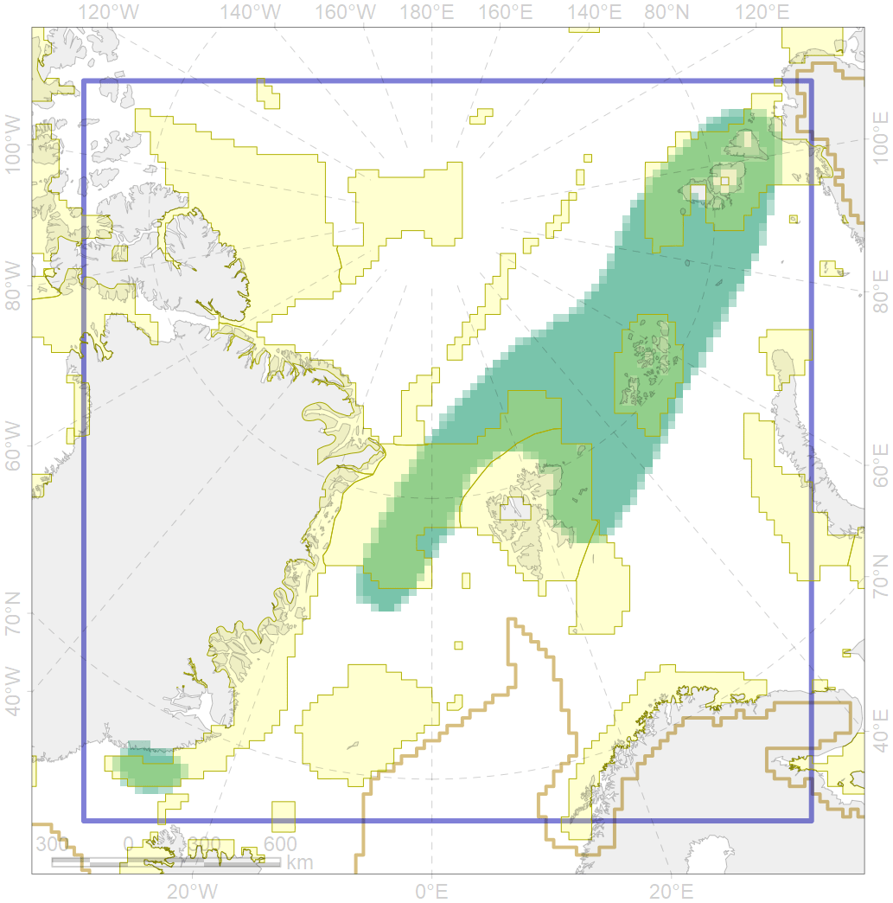

6040
 

| CF ID | 6040 |
| CF Name | Ivory gull (Pagophila eburnea) postbreeding grounds in the Barents and the Kara Sea |
| Time Period | 1990-2009 |
| Source(s) | Gilg et al 2010 |
| Seasonality | September-October |
| Depth Horizon | >0 m |
| Methodology | Field Data |
| Author Name | Gavrilo, Tertitski |
| Notes | |
| Conservation Target Set in the Scenario | 0.216 |
| Conservation Target Achieved in the Scenario | 0.460 (Scenario: 212.9%) |
| PAC ID | Proportion in the PAC | Contribution to ArcNet Target Achievement | PAC’s Contribution to the Achieved Target |
|---|---|---|---|
| 14 | 13.7% | 49.6% | 23.3% |
| 22 | 7.8% | 34.7% | 16.3% |
| 29 | 16.9% | 72.4% | 34.0% |
| 30 | 6.3% | 28.2% | 13.3% |
| 31 | 0.1% | 0.6% | 0.3% |
| 32 | 2.2% | 7.2% | 3.4% |
| inner | 47.0% | 192.7% | 90.5% |
| outer | 53.0% | 20.2% | 9.5% |